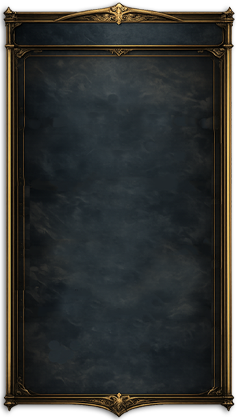
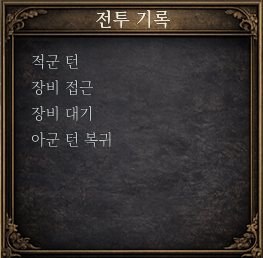

로스터에 깃발이 꽂혔다
프레임·군기·전투기록, 전투 UI 완성도가 쌓이는 중
2026년 08월 08일로스터 헤더부터 다시 짰다
지난 글에서 중앙 HUD와 로스터창 디자인을 처음 입혔다면, 이번엔 그 위에 실제 데이터가 붙는 로스터(AllyRosterHud, EnemyRosterHud) 자체의 구조를 다듬는 단계였다. 먼저 로스터 상단에 헤더 구조를 새로 추가하고, 기존 장수 카드 5개를 그 아래로 재배치했다.
통짜 프레임 하나로 정리
로스터 패널 전체를 감싸는 프레임 스펙을 확정했다. 270×524px, 투명 PNG.

이 실전용 프레임을 아군·적군 로스터의 최하단 배경으로 시험 배치하고, 기존에 있던 파란색/적갈색 헤더 배경판은 걷어냈다. 대신 HeaderIcon과 HeaderLabel은 독립된 UI 노드로 그대로 남겨뒀다 — 프레임이 시각적 배경을 맡고, 헤더 요소는 별도로 움직일 수 있게 구조를 나눈 것이다.
프레임을 새로 깔고 나니 예상 못 한 문제가 하나 나왔다. 현재 행동 중인 장수를 강조해주던 카드 테두리가 안 보이게 된 것. 원인을 먼저 짚어야 했다 — 새 프레임 때문에 테두리 대비가 묻힌 건지, 아니면 원래 있던 선택 스타일 연결 자체가 끊긴 건지. 새 효과를 임의로 만드는 대신, 원래 존재했던 "행동 장수 강조" 계약을 찾아서 복원하는 방향으로 고쳤다.
로스터 옆에 군기를 세우다
아군·적군 로스터의 전장 중앙 쪽 측면에 동양식 세로 군기를 각각 독립된 이미지로 시험 배치했다.
기존 HeaderIcon에 있던 노란 사각형 표시는 없앴고, "아군 편성"·"적군 편성"이라는 실제 텍스트는 그대로 유지했다. 작은 변화지만, 로스터 자체가 단순한 정보창이 아니라 전장의 일부처럼 느껴지기 시작한 지점이었다.
초상만 남기고 접어보기
로스터를 두 가지 모드로 쓸 수 있게 만드는 실험도 같이 했다. 상세 정보 모드와 전장 집중 모드를 아군·적군 깃발 각각에 독립 버튼으로 연결해서, 펼치면 지금처럼 프레임·텍스트·병력·병종이 다 보이고, 접으면 그것들이 전부 사라지고 장수 초상만 남는 방식이다. 접었을 때는 초상을 15~20% 정도 키워서 존재감을 유지하고, 선택된 장수는 노란 테두리를 그대로 유지하며, 사망·퇴장한 장수만 어둡게 표시한다. 이때 아군은 화면 왼쪽 끝, 적군은 오른쪽 끝으로 더 바짝 밀착시키고 군기도 초상 모드 위치에 맞춰 함께 이동시켰다. 접고 펼치는 전환은 0.3초 Tween으로 짧게. 이 실험은 어디까지나 표시 방식에 관한 것이라, 실제 전투 로직이나 Battle_Land.tscn 본체는 건드리지 않았다.
하단부, 자리부터 다시 잡기
로스터 다음은 화면 하단이었다. 전투 기록창을 실제로 기능하게 만들기 전에, 먼저 새로 만든 정사각형 배경 프레임을 테스트 씬에 배치하는 것부터 시작했다. 이번 단계에서 만든 건 딱 "프레임 추가 + 위치를 조정할 수 있는 구조"까지였다.
그 결과로 나온 게 전투기록창의 완성된 모습이다.

화면 아래를 정리하고, 턴 전환을 가볍게
하단부에는 원래 InteractionGuideHud라는 긴 안내바가 있었는데, 턴이 바뀔 때 "아군 턴 / 적군 턴" 문구가 커졌다 작아지는 알림 연출로 바꾸면서 이 안내바 자체를 없앴다. 처음엔 중앙에 군기와 함께 "아군 턴 / 적군 턴" 텍스트를 크게 띄우는 연출을 시도했는데, 화면이 조잡해 보여서 방향을 바꿨다.
최종적으로는 이미 로스터 옆에 세워둔 아군·적군 군기를 그대로 활용하기로 했다. 해당 진영의 턴이 시작될 때, 그 자리에 있는 군기가 약 1.5배로 커졌다가 원래 크기로 돌아오는 짧은 pulse 연출 하나만 남겼다. 새로운 UI 요소를 추가하는 대신, 이미 화면에 있는 요소를 활용해서 정보를 전달하는 쪽을 택한 것이다.
앞으로
로스터 프레임과 군기, 전투기록창까지 하단부의 뼈대가 갖춰졌다. 다음은 로스터 접기/펼치기 모드를 실제로 완성하는 것과, 턴 전환 pulse 연출을 실전 전투에 붙이는 작업이 남았다.